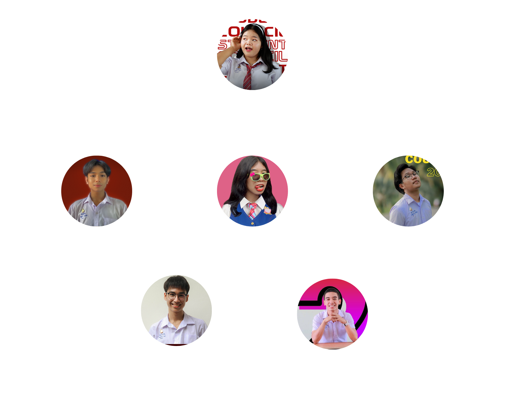

ทำเนียบประธานนักเรียน
โรงเรียนสาธิตเทศบาลวัดเพชรจริก
รายชื่อประธานนักเรียน ปีการศึกษา 2552 - 2561
ปีการศึกษา 2561 : นางสาวชญานิกา คงแก้วปีการศึกษา 2560 : นายกฤติคุณ ศรีเจริญ
ปีการศึกษา 2559 : นายวรรณธงชัย ฤทธาธร
ปีการศึกษา 2558 : นายโสพล แก้วมี
ปีการศึกษา 2557 : -
ปีการศึกษา 2556 : นายคณพศ มาศศรี
ปีการศึกษา 2555 : นายอภิเดช โฉมทอง
ปีการศึกษา 2554 : นายพีรยุทธ งามขึม
ปีการศึกษา 2553 : นางสาวศรทิพย์ โฉมทอง
ปีการศึกษา 2552 : นายวีรพันธ์ เรืองสันติ